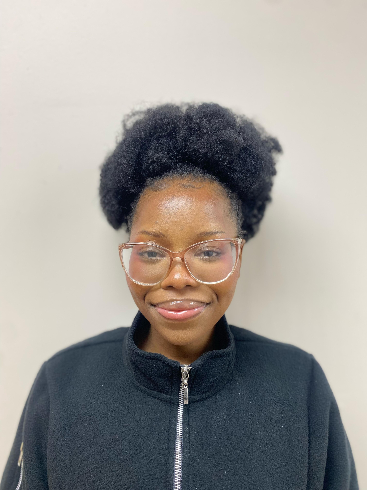

The hands behind alucrochetco

Hi, I'm Alu — a 21-year-old self-taught crochet and knit artist based in Cape Town. I've been knitting since 2016, when a neighbour decided to teach me. I stepped away from it for a few years, until 2023 sparked my curiosity again through YouTube tutorials and a lot of personal exploration. What started as curiosity quickly became something I genuinely love and keep growing with.
In November of last year, I began making plushies — and that's when I really found my creative direction.
I enjoy making toys, accessories, and clothing, but plushies have become my favourite focus. They feel more fun, expressive, and creatively rewarding.
One of my most meaningful creations is Daisy — my very first plushie, and the one that started it all.
Every plushie is handmade with care and attention. A single bunny takes around 9–10 hours to complete — each one made entirely by hand, stitch by stitch.
My style is soft, fun, and aesthetic. I want alucrochetco to feel gentle and comforting, but still playful and full of personality.
I'm currently growing my handmade business with the goal of expanding while keeping that personal touch that makes every piece meaningful.
My pieces are made for kids and young adults — anyone who still finds joy in soft, cute, comforting things. 💕